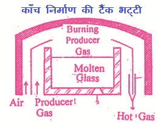
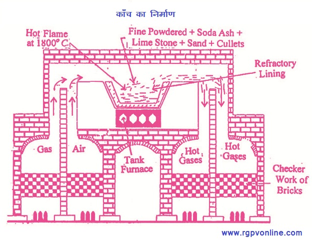

Q.26 : काँच का उत्पादन समझाइए।
उत्तर - काँच एक ऐसा तरल है जो अत्यधिक ठण्डा करने पर पारदर्शक या अल्पपारदर्शक ठोस के समान दिखाई पड़ता है। यह, सिलिका (SiO2), सोडियम सिलिकेट (Na2SiO3) तथा कैल्सियम सिलिकेट (CaSiO3) का मिश्रण होता है। यह अत्यधिक उपयोगी पदार्थ है जो बाजार मं विभिन्न आकार व आकृति में पाया जाता है। सामान्यतः सभी प्रकार के काँच में मुख्यतः सिलिका, सोड़ा ऐश (Na2CO3) तथा चूना पत्थर (lime stone) पाया जाता है। थार्प के अनुसार, “काँच धात्विक सिलिकेटों जिनमें क्षार धातुओं के सिलिकेट का होना आवश्यक है का अक्रिस्टलीय पारदर्शी या अल्पपारदर्शी अतिशीतित मिश्रण है।"
काँच का संघटन (Composition of Glass)- काँच विभिन्न सिलिकेट अथवा बोरेट तथा बोरो सिलिकेट का जटिल मिश्रण है। सभी प्रकार के काँच में सिलिका (SiO2) पाया जाता है। विभिन्न प्रकार के काँचों का संघटन भी भिन्न-भिन्न होता है। अतः काँच के लिए एक सामान्य सूत्र नहीं दिया जा सकता है। सामान्य सोडा काँच को Na2O.CaO.6SiO2 तथा पोटाश काँच को K2O.CaO.6SiO2 सूत्र द्वारा प्रदर्शित किया जाता है।
काँच के निर्माण के लिए कच्चा माल - काँच के निर्माण के लिए निम्नलिखित कच्चे पदार्थ (सामग्री) प्रयुक्त किये जाते हैं -
(i) सिलिका - यह क्वार्ट्ज, फ्लिण्ट या सफेद रेत के रूप में प्रयुक्त होता है।
(ii) पोटाश - यह शुद्ध पोटैशियम कार्बोनेट (K2CO3) के रूप में प्रयुक्त होता है।
(iii) सोडा - यह सोडियम कार्बोनेट या सोडियम सल्फेट (जिसमें थोड़ा कार्बन मिला हो) के रूप में प्रयुक्त होता है।
(iv) क्षारीय मृदा - चूना पत्थर, खड़िया या चूने के रूप में प्रयुक्त होती है।
(v) भारी धातु - लिथार्ज (PbO), सिन्दूर (red lead, Pb3O4) या सफेदा के रूप में। प्रयुक्त होती है।
(vi) रंगनाशक पदार्थ - KNO3 तथा MnO2 आदि के रुप में प्रयुक्त होते हैं।
(vii) कलेट - टूटे हुए काँच के टुकड़े कलेट कहलाते हैं। इनकी उपस्थिति से कच्चा माल शीघ्र पिघल जाती है। विशिष्ट रंग प्रदान करने के लिए फेरस ऑक्साइड (FeO), फेरिक ऑक्साइड, क्यूप्रस ऑक्साइड (CuO), मैंगनीज ऑक्साइड, कोबाल्ट ऑक्साइड आदि प्रयुक्त किये जाते हैं।
काँच का निर्माण (Manufacture of Glass)- साधारण काँच के निर्माण में प्रयुक्त किये जाने वाले प्रमुख पदार्थों में सिलिका, सोडा ऐश तथा चूना पत्थर (CaCO3) हैं। इन पदार्थों को उचित मात्रा में मिलाकर बारीक पीस लिया जाता है। इस पिसे हुए मिश्रण में काँच के टूटे-फूटे टुकड़े (कलेट) मिला दिये जाते हैं तथा मिश्रण को पुनः पीसकर समांग बना लिया जाता है। इस मिश्रण को बैच कहते हैं। इस मिश्रण (बैच) को पात्र भट्टी (pot furnace) में अथवा टैंक भट्टी में डाल देते हैं। ये भट्टियाँ ताप बचत के पुनर्योजी तंत्र के आधार पर कार्य करती हैं।

चित्र 26.1 काँच निर्माण की टैंक भट्टी
भट्टियों में बैच को वायु अंगार गैस द्वारा गरम करते हैं। लगभग 1800°C पर मिश्रण पिघलकर संगलित हो जाता है। निम्नलिखित प्रकार की अभिक्रियाओं के फलस्वरूप सिलिकेटों का एक मिश्रण प्राप्त होता है।

चित्र 26.2 काँच का निर्माण
CaCO4 + SiO2 → CaSiO4 + CO2 ↑
Na2CO4+SiO2 → Na2SiO4 +CO2 ↑
2Na2SO4 + C → 2Na2O+CO2+2SO2
Na2O + SiO2 → Na2SiO4
जब मिश्रण में CO2 तथा SO2 का निकलना बंद हो जाता है तब मिश्रण में रंगनाशक पदार्थ मिला दिये जाते हैं। पिघले हुए काँच की सतह पर अशुद्धियाँ तैरती रहती हैं, जिन्हें सिलिका के चमचों द्वारा पृथक् कर दिया जाता है। स्वच्छ काँच को 800°C तक ठण्डा करते हैं फिर साँचों में ढालकर वांछित काँच प्राप्त कर लिया जाता है।